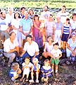
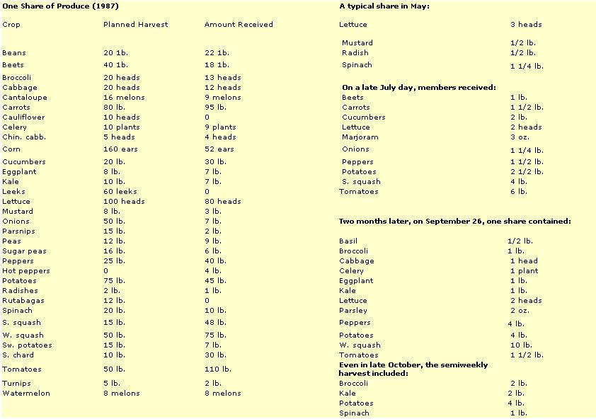
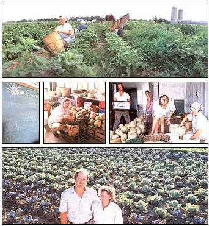
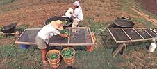

Two former Mother Earth News gardeners are breaking ground on a radical new concept in farming.
"DO YOU KNOW WHERE YOUR Farmer is tonight?"
Rod Shouldice, head of a bio-dynamic community in Kimberton, Pennsylvania, asks the question-a query first amusing, then haunting. "Our very existence depends upon what we eat," he continues. "Somebody out there is growing the substance of our physical bodies. Are they dumping all kinds of toxic stuff on what is ultimately going to be us?"
Should ice's remarks describe a problem common to many conscientious consumers: How can a person control the quality of the produce that he or she eats? But look at the original question from a grower's point of view, and it becomes, "Do I know where my buyer is tonight?"
Finding a profitable market for crops has become so difficult that many American farmers have a hard time making ends come within sight of meeting. Former Mother Earth News gardeners Kerry and Barbara Sullivan know that problem well. In 1983 the Sullivans left MOTHER to study bio-dynamics (a method of organic agriculture originated by Austrian Rudolf Steiner that combines spiritual and practical teachings) at Emerson College in England.
Once they returned to the States in '86, they faced the challenge of converting their hard-earned expertise into hard income. The Sullivans weren't sure what to do. All the successful market gardeners they knew were selling lettuces and gourmet vegetables to fancy restaurants, but Barb and Kerry didn't want to go that route. "We wanted to grow real food for real people," Barb states. "Besides, we didn't feel we could afford to spend half our time trying to market what we grew." Neither Should ice nor the Sullivans found quick answers.
Rod talked with others in his area and found that many people shared his concerns: They wanted clean, high-quality produce-yet lacked the time or skill to grow it themselves. Barb and Kerry did some searching, caretaking and floundering that first year, trying to find the opportunity they needed. They weren't having much luck. Enter CSA. A concept imported from Switzerland, CSA (Community Supported Agriculture) is a simple yet radical approach to food production. A group of people buy shares of a garden's production. They pay, in advance, for a percentage of the food to be grown.
Then, once or twice a week, mature crops are harvested and divvied up among the shareholders. The results? The members get food security-a regular supply of fresh, healthful produce during the growing season. And the growers get income security-an assured wage and market without the need to take upon themselves all of the financial risks inherent in agriculture. After Should ice heard about two young CSA projects in New England, he rounded up potential members in his community, recruited Barb and Kerry as growers and held an organizational meeting.
"We asked the Sullivans, `What's it going to cost you to grow our food for us?' When they told us $24,000, it was up to the group of people we had gathered to come up with the money." They did. Forty families anted up an average of $600 a share. The Sullivans then fronted $10,000 of personal savings to buy the necessary greenhouse and farming equipment and, in March 1987, the Kimberton CSA was off-or rather, in-the ground. (That land, by the way, is leased from the nearby Waldorf School.) The year was a definite success for the growers, but also quite a learning experience. A late start proved the biggest handicap: Barb and Kerry had to work extra hard to build fertility and fight weeds. The couple tried to carefully estimate shareholder needs for each of the 33 crops they grew, but some crops came in far off the mark.
For instance, a low sweet corn total disappointed a lot of corn-on-the-cobbers. ("We learned quickly that people really love that crop," Kerry laments.) Cauliflower, leeks and rutabagas failed completely. ("That wasn't as big a problem," Kerry chuckles.) On the other hand, CSA members found themselves facing a pair of classic gardener's gluts-too many squash and tomatoes.
"We asked the Sullivans,
'What's it going to cost you to grow our food for us?' "
Chalk the errors up to first-time guessti
mates and that ever-uncontrollable factor, the weather. The Sullivans' accurate estimates and overall totals were still quite impressive:
(And that doesn't include the seven herbs the couple raised and distributed.)
Of course, no one wants to receive 80 heads of lettuce or 95 pounds of carrots all at one time. So one of Barb and Kerry's responsibilities was to spread their harvest over time-as far early and late into the growing year as possible. The weather beating and succession-planting skills demanded for this are tricky, but as Should ice noted, "The Sullivans are masters at season-extending." Indeed, excluding a hot, dry spell in August, Kerry and Barbara gave CSA members let tuce from early May until mid-December!
Thus, twice a week for seven months, members brought home fresh bounty.
After the fresh harvest gave out, members garnered potatoes, beets, parsnips, carrots and winter squash from a common root cellar until mid-March.
Did the shareholders get their total investment's worth? Yes-Barbara did careful week-by-week cost comparisons and concluded that the crops priced out about the same as wholesale organic vegetables. Members were pleased with their produce, too. "It wasn't buggy or dirty like some or ganic vegetables are," Rod says. "Instead, it was beautiful, flawless and terrific-tasting." Busy two-career couples discovered the pleasure of "coming home to their vegetables" and quit dining out so often.
Children in some families began asking if the vegetables at the dinner table were from Barbara and Kerry-and refusing to eat them if they weren't! Still, there was clearly some consumer adjustment involved in learning to eat produce in season instead of just picking by fancy from endless choices in a supermarket. As Kerry points out, "Some people didn't understand why they were getting beet greens before they got beets.
" Should ice, however, maintains that most members realized that "eating in season requires an adjustment in mentality" and made appropriate dietary changes. "With this project, people felt `That's our garden, our food.' They didn't pick up their shares, then sneak out to the Acme supermarket." Furthermore, unless a family was committed to preserving food, many of them actually found themselves with more vegetables than they could eat. The acid test of member satisfaction, of course, is renewal, and almost all the participants in the Kimberton CSA signed up for a second year. In addition, new members bumped the total number of shareholders up to 100. To cope with the too-much-food problem, the size of a share was halved from the year before.
And to cover a slight increase in expenses, that share cost $320 (the previous cost for the same amount of food was $300 at the beginning of the year with $10 added on at the end of the season to cover the gardeners' Social Security tax). Actually, not every member pays the same amount per share. "A childless two career couple can afford to pay more than a single parent family, and we wanted both to be able to be members," Rod notes.
"So when we had our February membership meeting, we told people they could pay from $270 to $370 for a share, as long as the total averaged out to $320. Everyone wrote down the price they wanted to pay, then someone gathered up the papers, went in another room and tallied it all up. It turned out we were short an average of $5 a share, so we passed the papers back out for another go-round. This time, we ended up with a surplus of $10 a share!"
The Kimberton CSA also wanted to create some mechanism for sharing the harvest according to need. "A New Hampshire CSA we know about simply lets its members come and take what they want," says Rod. "Initially, some people in that group were worried that the early birds would get all the good vegetables. But the opposite happened instead there was food left over at the end of the day. They had to get volunteers to push the produce on people. "Our group wasn't willing to go the route of complete free choice, though, so we chos a middle ground. A sign in the distribution shed on pickup day tells how much of each crop you're entitled to take. If you don't want all of it, you can put the extra on a surplus table. Anybody can take what they want from that."
Concerns
To many, the CSA concept sounds almost too good to be true. However, the plan does work, but it isn't flawless. "Good gardeners are the key to the whole thing," says Should ice."The consumers are there, but finding capable people who can grow excellent produce on that scale is the most limiting factor in the development of more projects." And it's not all a snap for the growers. While the CSA does assure them of an income, being obligated to successfully grow crops for scores of shareholders creates "a different kind of pressure," Barbara admits.
The Sullivans even decided to eat the same size share that regular members get-and to pay the going price for it. That way they see for themselves how adequately shareholders are supplied ("We eat quite well," Barb reports) and get a few extra "righteous points" for integrity. ("Nobody can say the gardeners ate all the sweet corn," Kerry says, only half in jest.) Another concern is income: Kerry and Barbara together earned about $16,000 last year. (That doesn't include $2,700 from the CSA to start paying back on their equipment investment.)
While that's not a good wage for two people who each put in about 55 hours a week of hard, highly skilled work, Barb and Kerry understand that their "business" is in its infancy and, like many a conventional enterprise, may take a while to pay off. As time goes on, their garden will get more productive, and the membership may grow. The amount of financial support members are willing to provide may also increase once the CSA gets past the confidence-building stage.
Gone are the days
when Kerry thought "Rototiller" was a four-letter word .
The Sullivans are also well aware that if they had started market gardening on their own, they would have had to work even harder-spending many hours finding and supplying markets-and most likely would have ended up with less income to show for it. Barbara points out, too, how pleased she and Kerry are to be part of "a new kind of social concept. It's great to know the people that we're feeding and that are supporting us. It's really important to us to know that the gifts that we take from the earth are going to be used and appreciated. The project also gives us the chance to garden ecologically. to be as gentle as possible to the earth. Any time you raise a crop, you take something from the soil. We want to be able to return as much as possible."
Possibilities
At this point, no one knows how durable the CSA concept is. Once the novelty wears off, will people still remain committed to supporting growers up front, eating seasonally from a garden and making twice-weekly food pickups? Only time will answer that-and it may get many chances to do so. CSAs could be about to hit a boom stage in America. The number of groups expanded from three in 1987 to 10 in '88. Across the country, several other groups are trying to get together to find growers for next year. (The concept has even spread to Japan.) For the present, though, at least a few groups of people in America know exactly where their farmers are tonight, and a few growers know exactly where their appreciative buyers are. And some new rays of hope are brightening the dark landscape of American agriculture.
HOW THEY DO IT
YOU HAVE TO BE A LONG-TIME MOTHER reader for the following observation to make any sense: One of my most persistent memories from visiting Kerry and Barbara Sullivan's community-supported garden in Kimberton, Pennsylvania, is the whitewashed wall of the Sullivans' barn shed where a half-dozen Smith & Hawken garden forks hang idly-like old coats no longer in fashion.
Let me explain. In 1979 Barb and Kerry created the Mother Earth News, Eco-Village Research Garden. For four years, they diligently maintained 130 double-dug beds of vegetables and flowers. Each year they created over 15 tons of premium compost. They did all this work by hand, mostly with the aid of their sturdy Bulldog garden forks.
Now those forks are retired ("The only thing we use them for is digging potatoes," Barbara admits). Gone also are the days when Kerry pronounced "Rototiller" as if it were a four-letter word instead of a four-syllable one, and when the couple feared black plastic was worse for plants than black rot.
Sound like a sellout? A headline for Biotech Chemicide Growers Weekly: "Lily-Pure Organic Gardeners Finally Face Reality"? Not at all. As explained in the main article, not only are Barb and Kerry sticking to their organic (indeed, bio-dynamic) ideals, they're on the cutting edge of an exciting new way of advancing them. But the Sullivans and MOTHER go back a good ways-so I just couldn't resist teasing them a little about the changes they've made.
Actually, the techniques the Sullivans are using to raise five acres of organic vegetables for 100 shareholders are as exciting as the community involvement behind the enterprise. They fertilize, shape, plant and weed dozens of permanent raised beds-all mechanically (using methods they learned from bio-dynamic grower Mac Mead in Spring Valley, New York). Their 1950 Farmall Super-A tractor has well-spaced front wheels for straddling the three-foot-wide growing beds. Likewise, the wheels on the scaled-down manure spreader they use (to add compost) fit those same pathway tracks. To make the beds, they attach a set of soil-busting harrows (spring like metal claws) under the tractor and a specially built bed maker behind.
The bed maker (designed by W.W. Manufacturing Co., 60 Rosenhayn Ave., Bridgeton, NJ 08302) has one large disk on each side to push dirt to the middle, adjustable boards to shape and level the soil, and two rows of small, soil-pulverizing disks (called Meeker harrows) to do the final texturizing. One or two passes with this rig and a bed is shaped and worked up for planting.
Barbara (who does most of the tractor driving) then pulls a homemade row marker down the bed. The three equally spaced wheels on her rig make three precise planting furrows. After that, a Swedish Nibex seeder is hand-pushed down each row to drop accurately spaced seeds in place (trans plants are dropped into the furrows by hand).
The Sullivans special-ordered a Buddingh Wheel Hoe (Buddingh Weeder Co., 7015 Hammond, Dutton, MI 49316) designed to fit the row spacings in their beds. This peculiar looking device has a double set of gear-spun wire baskets. As it's pulled behind the Farmall, the baskets churn through the soil, uprooting the young weeds between the rows. The couple use hand-held stirrup hoes (also called hula or scuffle hoes) and, if necessary, their own fingers to get any remaining weeds.
Drip irrigation, Speedling plant-starter trays and Mellinger's Trellis-Plus (a crop support netting with holes so big you can weave shooting tomato vines through it) all help reduce toil and boost productivity. Barbara's own favorite growing aid is Kimberly Clark's floating row cover ("I'm in love with it"). And, oh yes, the Sullivans do have some human aid-a trio of part-time apprentice volunteers. But when you're growing close to 15 tons of organic vegetables, you're entitled to a little help.
Editor's Note: The Great Barrington, MasCSA has produced a half-hour educational video on their project. You can buy it for $30 from Robyn Van En, Indian Line Farm, R.R.3, Box 85, Jugend Rd., Great Barrington, MA 01230.Ron Shouldice (Biodynamic Association, P.O. Box 550, Kimberton, PA 19442) is willing to answer specific questions from people interested in starting their own projects. MOTHER asks that you please include a couple of dollars with any queries to help reimburse Ron for his expenses, time and trouble.
|
 The CSA garden provides bushels of glistening green peppers. |
 |
 |
|
 |
|
|